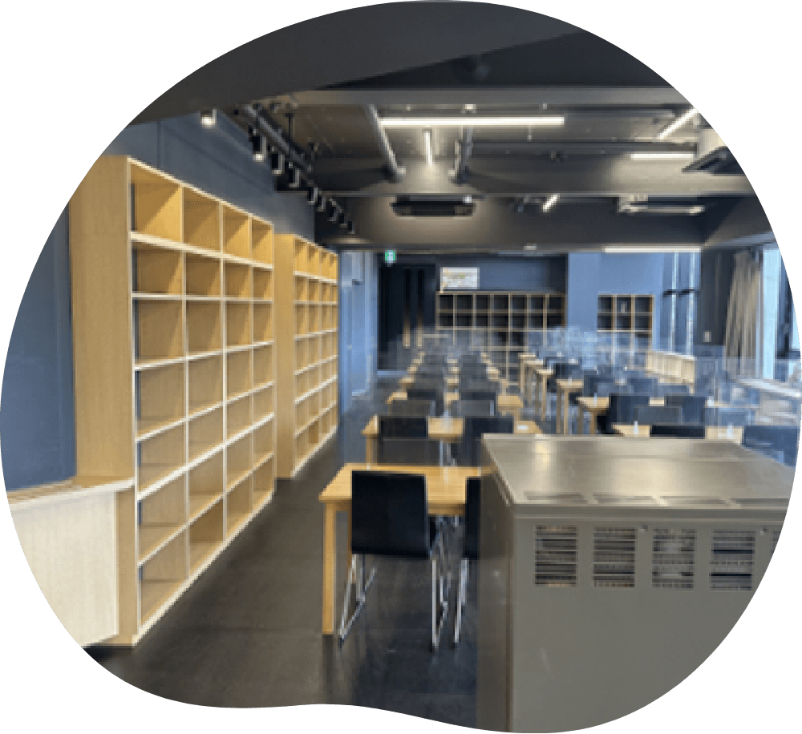
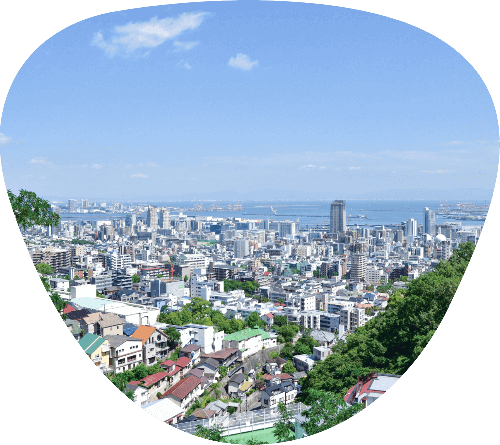

楽しく、そして尊い“保育”という仕事。
求められる実践的なスキルと確かな知識を身につけるために、
学びやすく集中できる環境を整えています。
-
01
-
Licenses Obtained
幼稚園教諭二種免許も
取得できる - 保育者として幅広いキャリアプランを選択できることから、当校では保育士資格に加え、幼稚園教諭二種免許の取得を義務づけています。近畿大学九州短期大学通信教育部との提携によって取得でき、卒業と同時に短大の卒業資格も得られます。
-
Licenses Obtained
幼稚園教諭二種免許も
-
02
- Choice of learning styles 選べる学習スタイル
- 好きなことを楽しみながら学べる「昼間部」と、昼間働きながら2年間で卒業できる「昼夜間部」を用意しました。ライフスタイルに合わせて、効率よくしっかりと学ぶことができきます。
-
03
- High school facilities available 高校の施設が利用できる
- 隣接する神戸第一高等学校の調理室や体育館などが利用でき、充実した環境のもとのびのびと実技を学ぶことができます。昼食には食堂で低価格で栄養バランスの良い食事を摂ることもできます。さらにピアノ練習に集中して取り組めるよう一人一台のピアノを用意しています。
-
04
- Support system to watch over and guide you 見守り導くサポート体制
- 保育・福祉コースもある神戸第一高等学校の高校教育のノウハウを活かしながら、日々の学びから就職まできめ細かくサポート。即戦力として求められる実践的なスキルと共に、どんなことも楽しみながら乗り越えていける強い精神力を養います。
-
05
-
Overlooking the city of Kobe Location
神戸の街を一望する
ロケーション - 神戸の中心地・三宮に近い好立地で、六甲山の麓、高台に位置する校舎からの眺めは素晴らしく、海を背景に神戸の街を一望できます。この開放的な環境での学習は、集中と緩和のバランスの良い循環を生み、習熟度を高めることができます。
-
Overlooking the city of Kobe Location
神戸の街を一望する